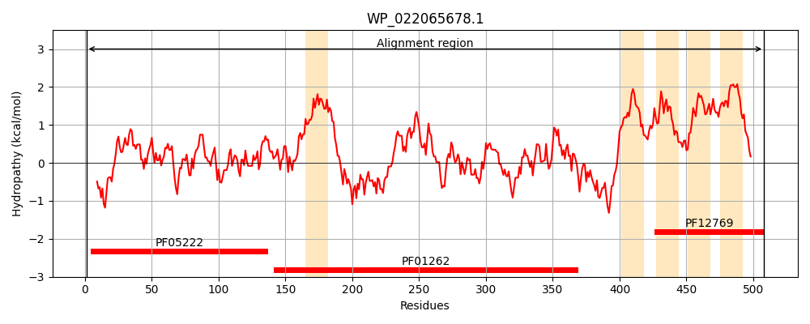
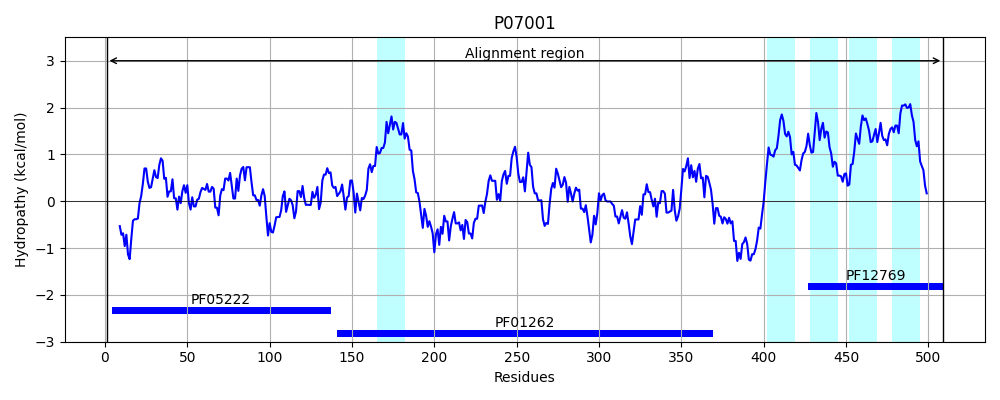
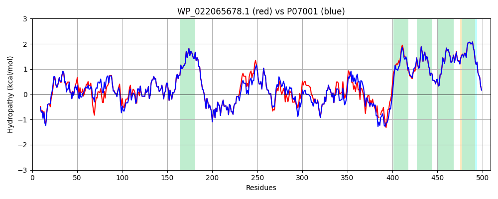

Hit Accession: P07001
Hit TCID: 3.D.2.1.1
Hit Description: gnl|BL_ORD_ID|8397 gnl|TC-DB|P07001|3.D.2.1.1 NAD(P) TRANSHYDROGENASE SUBUNIT ALPHA (EC 1.6.1.2) (PYRIDINE NUCLEOTIDE TRANSHYDROGENASE SUBUNIT ALPHA) (NICOTINAMIDE NUCLEOTIDE TRANSHYDROGENASE SUBUNIT ALPHA) - Escherichia coli.
Mach Len: 509
e:0.000000
Query TMS Count : 5
Hit TMS Count: 5
TMS-Overlap Score: 4.200000
Predicted Substrates:CHEBI:5584;hydron
BLAST Alignment:
Score: 2334 , Bit scores: 903 bits, E-value: 0.0e+00, Alignment length: 509, Percentage identity: 90
Query: 1 MRIGVPQERLAQETRAAATPKTVEQLLKLGFSVAVESGAGKLASFDDAAFTQAGAEIVAGNEVWQSDIILKVNAPNDDEIALLNPGTTLISFIWPAQNPQLMEKLAARNINVMAMDSVPRISRAQSLDALSSMANIAGYRAIVEAAHEFGRFFTGQITAAGKVPPAKVMVIGAGVAGLAAIGAANSLGAIVRAFDTRPEVKEQVQSMGAEFLELDFKEEAGSGDGYAKVMSEAFIKAEMALFAAQAKDVDIIVTTALIPGKPAPKLITREMVDSMKSGSVVVDLASQNGGNCEYTVPGEVVTTANGVKIIGYTDLPGRLPTQSSQLYGTNLVNLLKLLCKEKDGNIVIDFDDVVVRGVTVVREGEITWPAPPIQVSAQPQAAAKKV-EAPKEAAKPVSPWRKYALIALAIILFGWLANVAPKEFLGHFTVFALACVVGYYVVWNVSHALHTPLMSVTNAISGIIVVGALLQIGHGGWVSFLSFIAVLIASINIFGGFTVTQRMLKMFRK 508
MRIG+P+ERL ETR AATPKTVEQLLKLGF+VAVESGAG+LASFDD AF QAGAEIV GN VWQS+IILKVNAP DDEIALLNPGTTL+SFIWPAQNP+LM+KLA RN+ VMAMDSVPRISRAQSLDALSSMANIAGYRAIVEAAHEFGRFFTGQITAAGKVPPAKVMVIGAGVAGLAAIGAANSLGAIVRAFDTRPEVKEQVQSMGAEFLELDFKEEAGSGDGYAKVMS+AFIKAEM LFAAQAK+VDIIVTTALIPGKPAPKLITREMVDSMK+GSV+VDLA+QNGGNCEYTVPGE+ TT NGVK+IGYTDLPGRLPTQSSQLYGTNLVNLLKLLCKEKDGNI +DFDDVV+RGVTV+R GEITWPAPPIQVSAQPQAA K E E SPWRKYAL+ALAIILFGW+A+VAPKEFLGHFTVFALACVVGYYVVWNVSHALHTPLMSVTNAISGIIVVGALLQIG GGWVSFLSFIAVLIASINIFGGFTVTQRMLKMFRK
Sbjct: 1 MRIGIPRERLTNETRVAATPKTVEQLLKLGFTVAVESGAGQLASFDDKAFVQAGAEIVEGNSVWQSEIILKVNAPLDDEIALLNPGTTLVSFIWPAQNPELMQKLAERNVTVMAMDSVPRISRAQSLDALSSMANIAGYRAIVEAAHEFGRFFTGQITAAGKVPPAKVMVIGAGVAGLAAIGAANSLGAIVRAFDTRPEVKEQVQSMGAEFLELDFKEEAGSGDGYAKVMSDAFIKAEMELFAAQAKEVDIIVTTALIPGKPAPKLITREMVDSMKAGSVIVDLAAQNGGNCEYTVPGEIFTTENGVKVIGYTDLPGRLPTQSSQLYGTNLVNLLKLLCKEKDGNITVDFDDVVIRGVTVIRAGEITWPAPPIQVSAQPQAAQKAAPEVKTEEKCTCSPWRKYALMALAIILFGWMASVAPKEFLGHFTVFALACVVGYYVVWNVSHALHTPLMSVTNAISGIIVVGALLQIGQGGWVSFLSFIAVLIASINIFGGFTVTQRMLKMFRK 509 | Protein Hydropathy Plots: |
|---|
|  |  |
Pairwise Alignment-Hydropathy Plot:
|
|---|
|  |